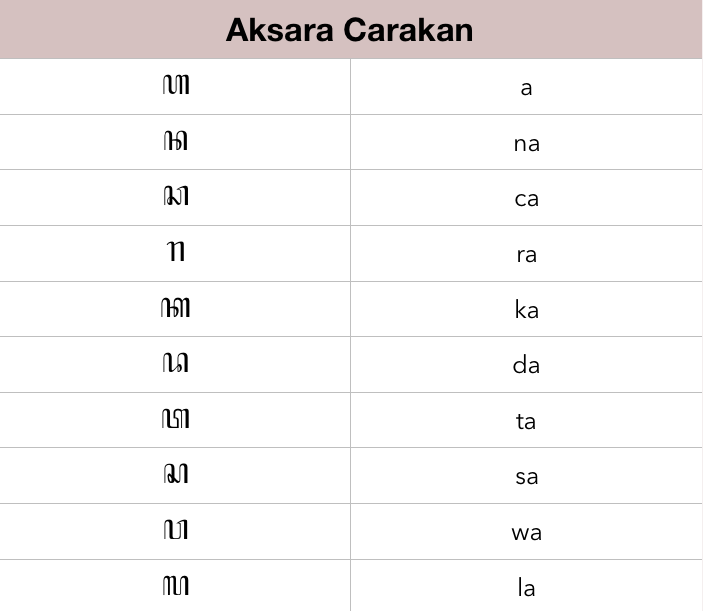
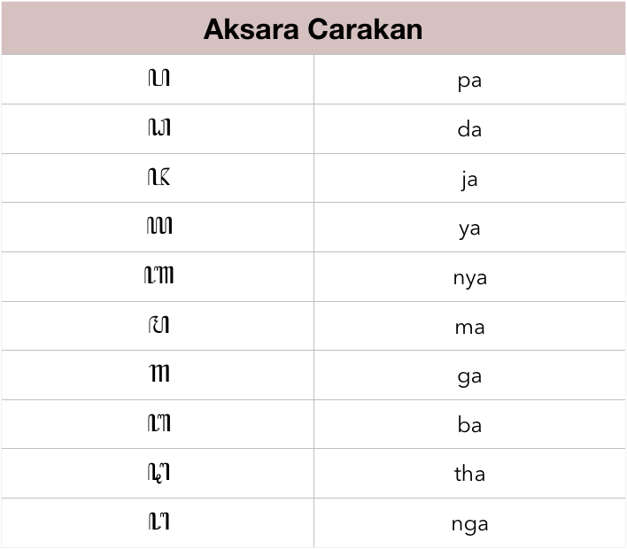

Jama.in
Aksara carakan merupakan jenis aksara jawa yang dikategorikan dalam aksara dasar, jika dilihat dari namanya yaitu
carakan maka artinya aksara tersebut memang dipakai untuk menuliskan kata-kata dalam bahasa Jawa. Di dalam setiap
aksara carakan ini memiliki bentuk pasangannya masing-masing. Misalnya aksara pasangan digunakan untuk mematikan
aksara vokal sebelumnya
